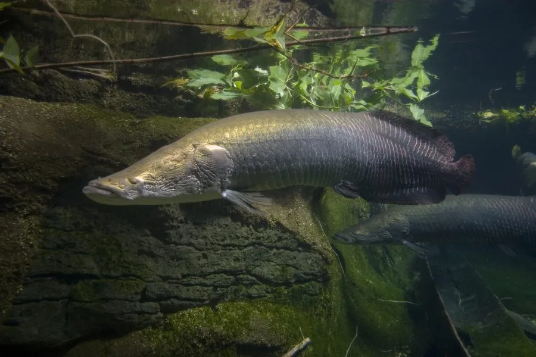

鱼类 · 动物界
巨骨舌鱼 Arapaima gigas

南美亚马孙河流域的巨型淡水鱼，体长可达 3 m，能用鳔呼吸空气，是现存最大的淡水鱼之一，也是当地重要的食用鱼。
- 分类
- 门脊索动物门纲硬骨鱼纲目骨舌鱼目科骨舌鱼科属巨骨舌鱼属
- 栖息环境
- 亚马孙河流域的缓流河段、湖泊和泛滥林，能耐受低氧水体
- 地理分布
- 南美洲亚马孙河流域，包括巴西、秘鲁、哥伦比亚和圭亚那等地
- 保护级别
- IUCN 数据缺乏（DD）；列入 CITES 附录Ⅱ
物种志
巨骨舌鱼体呈长圆柱形，前部稍粗，后部侧扁，头部骨骼坚硬，体表覆盖着大而厚的硬鳞，像披着一身盔甲。体色青灰或灰绿，背部颜色较深，腹部浅，体侧后部在繁殖期会泛出红色。成鱼体长一般 2 m，最大记录超过 3 m，体重可达 200 kg，是现存最大的淡水鱼之一。
巨骨舌鱼分布于亚马孙河流域的缓流河段、湖泊和泛滥林，是能呼吸空气的鱼类，每隔几分钟就要浮到水面吞一口气，靠高度血管化的鳔吸收氧气，因此能在缺氧的静水中生存。它是肉食性动物，捕食鱼类、甲壳类和小型水生动物，捕食时把猎物连同水一起吸入口中压碎。繁殖期雄鱼在沙底挖坑筑巢，守护鱼卵和刚孵化的幼鱼。巨骨舌鱼生长快、肉质好，是亚马孙流域居民重要的蛋白质来源，长期捕捞使野生种群数量下降，IUCN 将其评为数据缺乏，全部巨骨舌鱼属物种的国际贸易被列入 CITES 附录Ⅱ管制。当地已开展人工养殖和社区共管，以减轻对野生种群的捕捞压力。
形态与习性
- 食性肉食性，捕食鱼类、甲壳类和小型水生动物
- 体长一般 2 m，最大记录超过 3 m
- 体重常见 60–100 kg，最大可达 200 kg
- 呼吸靠高度血管化的鳔呼吸空气，每隔几分钟浮出水面换气
- 繁殖雄鱼在沙底挖坑筑巢，守护鱼卵和幼鱼
- 寿命约 15–20 年
趣味知识
- 巨骨舌鱼靠鳔呼吸空气，每隔几分钟就要浮出水面换一口气。
- 它的鳞片坚硬如盔甲，能抵御食人鱼的撕咬。
- 巨骨舌鱼是亚马孙流域重要的蛋白质来源，当地已开展人工养殖。